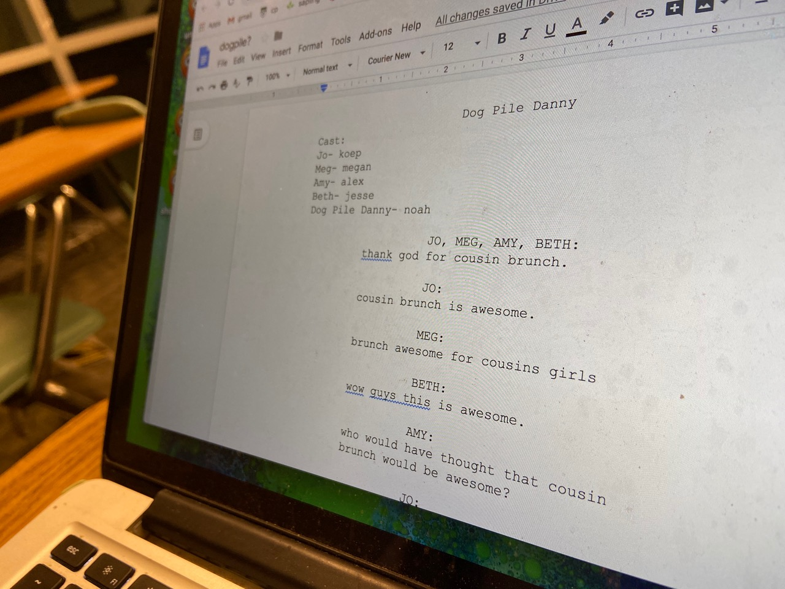

1 / 3

In the Construction Innovations building on February 3, 2020, Braden Wicker, fourth year Computer Science major, is asked to present his sketch ideas for the upcoming Nightcap show in March. This is the first step in the team’s creative process, as it allows team members to think out loud.
2 / 3

Nightcap members are encouraged to bring their laptops to meetings to jot down ideas and notes regarding their sketches.
3 / 3

Wylie Hughs, fourth year English major, graduated last quarter yet still goes to every meeting. “It’s great experience for knowing what I want to do later in life which is screenwriting. Plus all my best friends are there, so I want to hang out with them as much as I can before I move.” Highs has been on Nightcap for two and a half years.
2 / 3

From left to right- Zandler Chavez, fourth year Theatre Arts major, D’Angelo Reyes, third year Civil Engineering major, and Easton Elting, second year Computer Science major, fool around before the biweekly meeting starts. Reyes was talking to Elting about something he saw on Reddit the night prior. Laughing and making jokes is what keeps The Nightcap going, as simple jokes often turn into sketches.
2 / 3

At this particular meeting, the entire Nightcap team was split into multiple groups and put into different rooms. This was to ensure that they used their time wisely and productively, because everyone would have a chance to discuss their sketches and ask for feedback. Meetings usually run for two hours twice a week, leading up to the show. Even though it’s an extracurricular, attendance is key to having the funniest sketches and ultimately, a seamless show.
2 / 3

Alex Holmes, fourth year Theater Arts major, says joining Nightcap is the greatest decision in college she’s ever made. Joining her sophomore year, Holmes has written and acted in several sketches. Her favorite sketch is one in which she acts as President Armstrong’s wife and she sings text messages she exchanged with President Armstrong.
2 / 3

Humor is in the eye of the beholder, some may say. The Nightcap sketches are quirky takes on traditional late night comedy shows such as Saturday Night Live.